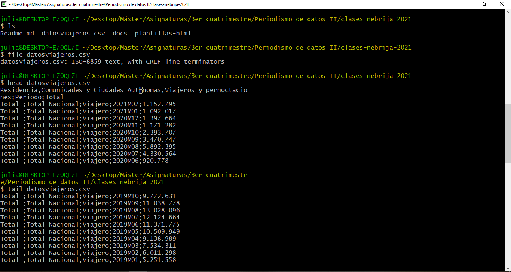
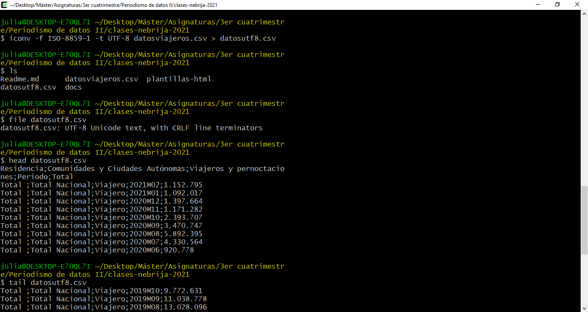
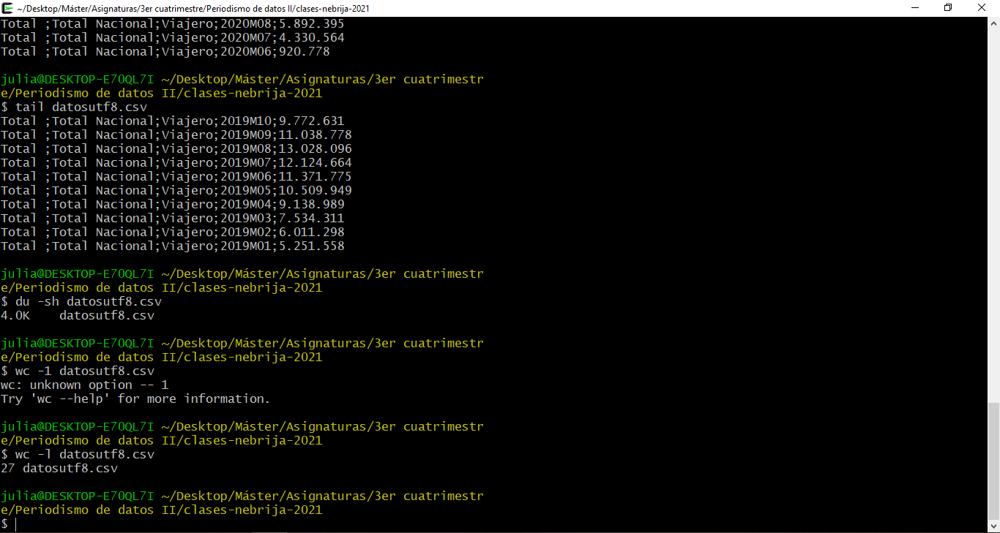
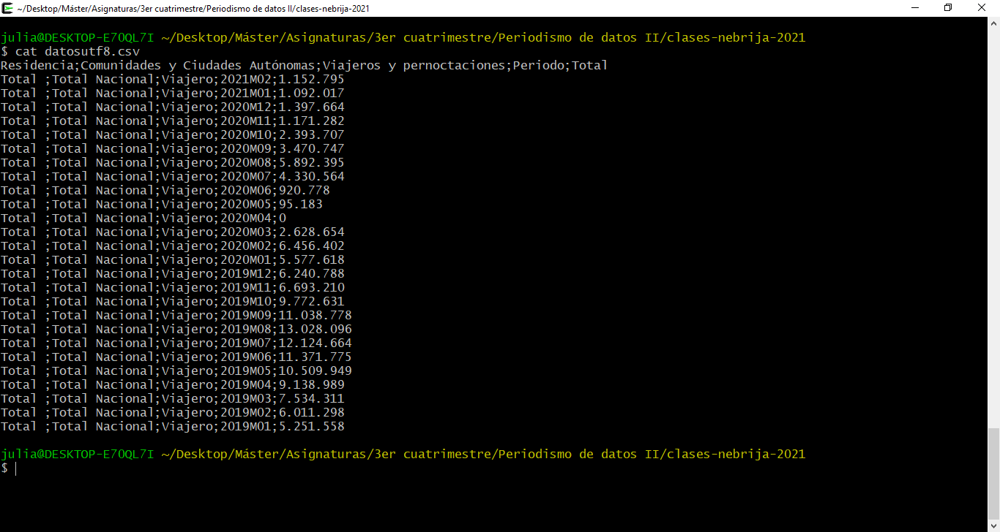
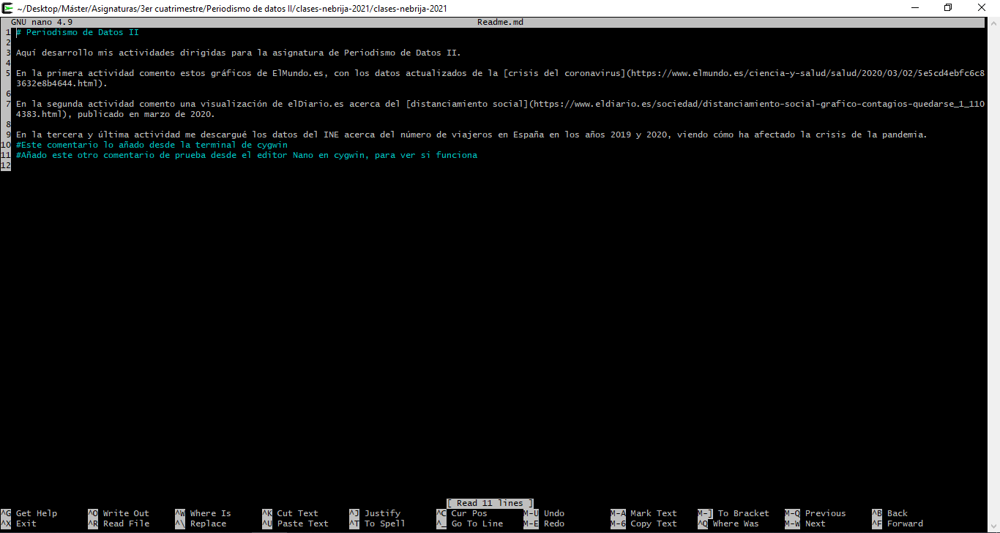

Recogida, análisis y tratamiento de datos
Este gráfico representa la cantidad de viajeros que tuvo España en total durante los años 2019 y 2020, centrando la atención en la clara diferencia tras la pandemia del covid-19.
Se puede observar que, a partir de verano de 2020, que es el periodo posterior al Estado de Alarma con toda la ciudadanía encerrada en casa, los viajes tienen el mismo patrón con respecto al año 2019, aunque presentan números muchísimo más bajos debido a la situación.
Este conjunto de datos los he sacado del INE y los descargué manualmente debido a que todos los intentos que realicé para descargarlos con la terminal cygwin no funcionaron.
En esta primera imagen de la terminal observo los documentos que tengo en la carpeta del curso, y en ella se encuentra “datosviajeros.csv”, el archivo en cuestión con los datos del gráfico. Con el comando “file” observo la información del archivo, y más adelante saco las primeras y últimas diez líneas. Ahí se puede ver que no reconoce los acentos, por lo que cambié el lenguaje.
Con el comando “iconv” cambié el fichero para que tuviese el lenguaje UTF-8, y pasé a llamar al archivo como “datosutf8”. Con otro “ls” confirmo que están los dos ficheros en la carpeta y vuelvo a ejecutar el comando “file” y a sacar las primeras y últimas diez líneas.
También ejecuté el comando “du -sh” al fichero para ver que ocupa 4.0K y el comando “wc -l” para ver que el archivo contiene 27 líneas. Por último, realicé un “cat” para mostrar al completo todo el contenido del archivo en la terminal de cygwin.
Además de este análisis, como todo este repositorio lo he modificado al completo desde GitHub, he intentado editarlo también desde la terminal de cygwin usando el editor Nano. Añadí varios comentarios al final del Readme.md pero no he conseguido que dichos cambios se aprecien en el GitHub.
